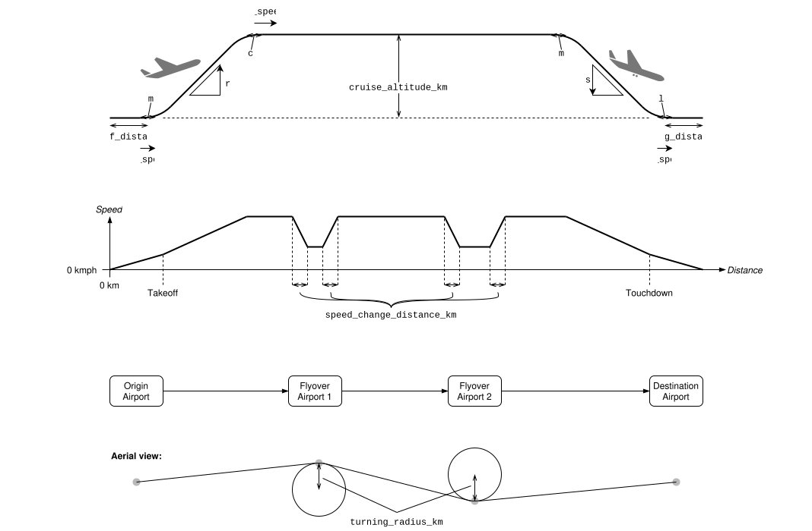
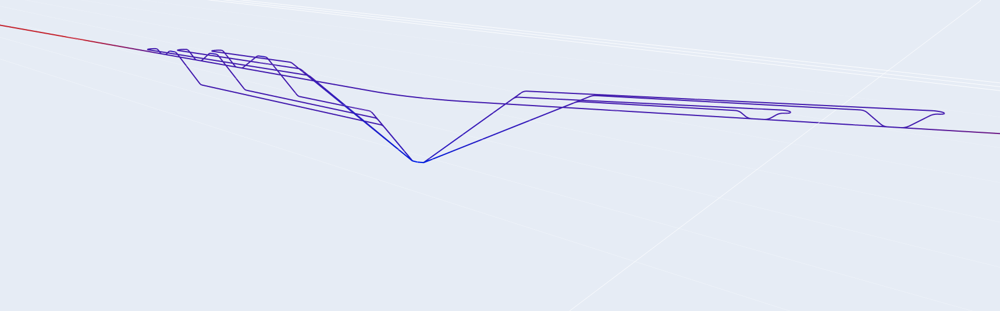

Configuration¶
The simulation is configured by a simulation_config.yml file in the specified --config-dir. This YAML file must follow the following schema.
Schema¶
The following schema is a full specification of the simulation config, including its required and optional fields, their data types, and descriptions.
Example for flight from JFK to LAX¶
The following is an example simulation_config.yml file for a flight from JFK to LAX.
airliner_config:
airplane_spec_name: Lh2FueledA320
refueling_rate_kW: 2333333 # 7e12/50 J/min LH2 * (60 min/h) / (3600 J/Wh) / (1000 W/kW)
initial_energy_level_pc: 100.0
viz_model_name: a320
airliner_flight_path_config:
origin_airport_code: JFK
flyover_airport_codes:
- PIT
- DEN
destination_airport_code: LAX
takeoff_speed_kmph: 262.5 # mean(240, 285) from https://en.wikipedia.org/wiki/Takeoff
takeoff_distance_km: 1
takeoff_leveling_distance_km: 0.1
rate_of_climb_mps: 70
climb_leveling_distance_km: 10
cruise_altitude_km: 10.5 # mean(9.4, 11.6) from https://en.wikipedia.org/wiki/Cruise_%28aeronautics%29
turning_radius_km: 50
descent_leveling_distance_km: 10
rate_of_descent_mps: 100
landing_leveling_distance_km: 0.1
landing_distance_km: 1
landing_speed_kmph: 200
speed_change_distance_km: 50
n_uavs_per_flyover_airport:
PIT:
to_airport: 1 # gets labeled as "PIT_UAV_0"
from_airport: 1 # "PIT_UAV_1"
DEN:
to_airport: 3 # "DEN_UAV_0", "DEN_UAV_1", "DEN_UAV_2"
from_airport: 2 # "DEN_UAV_3", "DEN_UAV_4"
uavs_config:
airplane_spec_name: At200
refueling_rate_kW: 2333333 # assumed same as airliner
initial_energy_level_pc: 100.0
initial_refueling_energy_level_pc: 100.0
viz_model_name: cessna
uavs_flight_path_config:
takeoff_speed_kmph: 100 # https://en.wikipedia.org/wiki/Takeoff
takeoff_distance_km: 1
takeoff_leveling_distance_km: 0.1
rate_of_climb_mps: 35
climb_leveling_distance_km: 0.5
smallest_cruise_altitude_km: 11.5
descent_leveling_distance_km: 0.5
rate_of_descent_mps: 50
landing_leveling_distance_km: 0.1
landing_distance_km: 1
landing_speed_kmph: 200
arc_radius_km: 1
airliner_uav_docking_distance_km: 0.0015
smallest_undocking_distance_from_airport_km: 50
inter_uav_clearance_km: 15
airliner_clearance_speed_kmph: 200
airliner_clearance_distance_km: 5
smallest_airliner_clearance_altitude_km: 5
inter_uav_vertical_distance_km: 1
ratepoints:
- elapsed_mins: 0
time_step_s: 1
- elapsed_mins: Airliner_ascended_point
time_step_s: 1
- elapsed_mins: Airliner_ascended_point + 5
time_step_s: 30
# PIT:
- elapsed_mins: PIT_UAV_0_on_airliner_docking_point - 5
time_step_s: 30
- elapsed_mins: PIT_UAV_0_on_airliner_docking_point - 1.5
time_step_s: 1
- elapsed_mins: PIT_UAV_0_on_airliner_undocking_point + 1.5
time_step_s: 1
- elapsed_mins: Airliner_curve_over_PIT_midpoint
time_step_s: 3
- elapsed_mins: PIT_UAV_1_on_airliner_docking_point - 1.5
time_step_s: 2
- elapsed_mins: PIT_UAV_1_on_airliner_undocking_point + 1.5
time_step_s: 2
- elapsed_mins: PIT_UAV_1_on_airliner_undocking_point + 10
time_step_s: 50
# DEN:
- elapsed_mins: DEN_UAV_0_on_airliner_docking_point - 10
time_step_s: 50
- elapsed_mins: DEN_UAV_0_on_airliner_docking_point - 1.5
time_step_s: 1
- elapsed_mins: DEN_UAV_0_on_airliner_undocking_point + 1.5
time_step_s: 1
- elapsed_mins: Airliner_curve_over_DEN_midpoint
time_step_s: 3
- elapsed_mins: Airliner_curve_over_DEN_midpoint + 40
time_step_s: 30
# LAX:
- elapsed_mins: Airliner_descent_point - 5
time_step_s: 30
- elapsed_mins: Airliner_descent_point
time_step_s: 2
- elapsed_mins: Airliner_landed_point + 5
time_step_s: 2
viz_config:
time_step_multiplier: 1
max_frame_rate_fps: 25
viewport_config:
size:
width_px: 1800
height_px: 900
origin:
x_px: 8
y_px: 138
theme: night
zoompoints_config:
airliner_zoompoints:
- elapsed_mins: 0
zoom: 5
- elapsed_mins: Airliner_takeoff_point
zoom: 0.5
- elapsed_mins: Airliner_ascended_point
zoom: 0.5
- elapsed_mins: Airliner_ascended_point + 0.5
zoom: 0.04
# PIT:
- elapsed_mins: PIT_UAV_0_on_airliner_docking_point - 1
zoom: 0.02
- elapsed_mins: PIT_UAV_0_on_airliner_docking_point - 0.3
zoom: 0.5
- elapsed_mins: PIT_UAV_0_on_airliner_undocking_point - 0.1
zoom: 10
- elapsed_mins: PIT_UAV_0_on_airliner_undocking_point + 0.5
zoom: 0.5
- elapsed_mins: Airliner_curve_over_PIT_midpoint - 5
zoom: 0.1
- elapsed_mins: Airliner_curve_over_PIT_midpoint
zoom: 0.05
- elapsed_mins: Airliner_curve_over_PIT_midpoint + 5
zoom: 0.1
- elapsed_mins: PIT_UAV_1_on_airliner_docking_point - 0.3
zoom: 0.5
- elapsed_mins: PIT_UAV_1_on_airliner_undocking_point - 0.1
zoom: 10
- elapsed_mins: PIT_UAV_1_on_airliner_undocking_point + 0.5
zoom: 0.5
- elapsed_mins: PIT_UAV_1_on_airliner_undocking_point + 2
zoom: 0.02
- elapsed_mins: PIT_UAV_1_on_airliner_undocking_point + 20
zoom: 0.005
# DEN:
- elapsed_mins: DEN_UAV_0_on_airliner_docking_point - 5
zoom: 0.004
- elapsed_mins: DEN_UAV_0_on_airliner_docking_point - 1
zoom: 0.02
- elapsed_mins: DEN_UAV_0_on_airliner_docking_point - 0.3
zoom: 0.5
- elapsed_mins: DEN_UAV_0_on_airliner_undocking_point - 0.1
zoom: 10
- elapsed_mins: DEN_UAV_0_on_airliner_undocking_point + 0.5
zoom: 0.5
- elapsed_mins: Airliner_curve_over_DEN_midpoint
zoom: 0.05
- elapsed_mins: DEN_UAV_3_on_airliner_docking_point
zoom: 0.5
- elapsed_mins: DEN_UAV_4_on_airliner_undocking_point
zoom: 0.1
- elapsed_mins: DEN_UAV_4_on_airliner_undocking_point + 1
zoom: 0.02
- elapsed_mins: DEN_UAV_4_on_airliner_undocking_point + 25
zoom: 0.002
# LAX:
- elapsed_mins: Airliner_descent_point - 50
zoom: 0.002
- elapsed_mins: Airliner_descent_point
zoom: 0.04
- elapsed_mins: Airliner_landing_point
zoom: 0.04
- elapsed_mins: Airliner_landed_point + 1
zoom: 0.5
- elapsed_mins: Airliner_landed_point + 5
zoom: 5
uavs_zoompoints_config:
to_airport:
- elapsed_mins: 0
zoom: 50
- elapsed_mins: takeoff_point - 2
zoom: 50
- elapsed_mins: takeoff_point - 1
zoom: 1
- elapsed_mins: ascended_point
zoom: 1
- elapsed_mins: ascended_point + 1
zoom: 5
- elapsed_mins: arc_start_point
zoom: 5
- elapsed_mins: descent_to_airliner_point
zoom: 0.5
- elapsed_mins: on_airliner_docking_point
zoom: 5
- elapsed_mins: on_airliner_docking_point + 0.1
zoom: 50
- elapsed_mins: on_airliner_undocking_point - 0.1
zoom: 50
- elapsed_mins: on_airliner_undocking_point
zoom: 5
- elapsed_mins: ascended_from_airliner_point
zoom: 0.5
- elapsed_mins: descent_point
zoom: 0.5
- elapsed_mins: landed_point
zoom: 5
- elapsed_mins: landed_point + 2
zoom: 50
from_airport:
- elapsed_mins: 0
zoom: 50
- elapsed_mins: takeoff_point - 2
zoom: 50
- elapsed_mins: takeoff_point - 1
zoom: 1
- elapsed_mins: ascended_point
zoom: 1
- elapsed_mins: ascended_point + 1
zoom: 5
- elapsed_mins: descent_to_airliner_point
zoom: 0.5
- elapsed_mins: on_airliner_docking_point
zoom: 5
- elapsed_mins: on_airliner_docking_point + 0.1
zoom: 50
- elapsed_mins: on_airliner_undocking_point - 0.1
zoom: 50
- elapsed_mins: on_airliner_undocking_point
zoom: 5
- elapsed_mins: ascended_from_airliner_point
zoom: 0.5
- elapsed_mins: arc_end_point
zoom: 0.25
- elapsed_mins: landed_point
zoom: 5
- elapsed_mins: landed_point + 2
zoom: 50
landed_uavs_waiting_time_mins: 30
map_texture_fpath: Miller_projection_SW-tessellated-vert_distortion_removed-cropped_to_pm_200deg_around_jfk_lax_centroid-fixed-gridlines_removed-waifu2x-2x.jpg
map_view_config:
map_texture_fpath: Miller_projection_SW-tessellated-vert_distortion_removed-cropped_to_pm_200deg_around_jfk_lax_centroid-fixed-waifu2x.jpg
models_scale_factor: 20000
zoom: 10
Flight path configuration¶
The simulation config includes configuration of the airliner and UAVs’ flight paths. The following diagrams explain a number of fields of the airliner and UAVs’ flight path configs in the context of the airplanes’ phases of flight, speed profile, and flight between airports.
UAV flight path¶
The following diagram shows the path of PIT_UAV_0 according to the example simulation_config.yml file. The xy-plane is to-scale but the vertical z-axis is scaled up to more clearly illustrate the altitude differences. The diagram shows some additional fields specific to the UAVs’ flight path config. The diagram also shows certain points—waypoints—along the UAV’s path. For example, when the UAV takes off, has reached its cruise altitude, begins to descend onto the airliner, etc. (These waypoints are labeled in the diagram, and their labels can be referenced when specifying the elapsed_mins of ratepoints or zoompoints.)
The following diagram shows all airplane paths surrounding PIT (airliner, PIT_UAV_0, and PIT_UAV_1). It is to-scale and was generated using viz_airplane_paths.py:
python src/three_d_sim/viz_airplane_paths.py --config-dir=configs/jfk_to_lax/

The following diagram shows the paths of DEN_UAV_0 and DEN_UAV_1 according to the example simulation_config.yml file.
The following diagram shows all airplane paths surrounding DEN.
